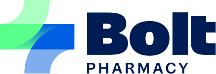

Skip to content
Independent product prototype - synthetic demo.
Not Bolt Pharmacy or AIOS software. No endorsement. No real people, invites or health data.

Support on Your Terms
Phone app
Analyst view